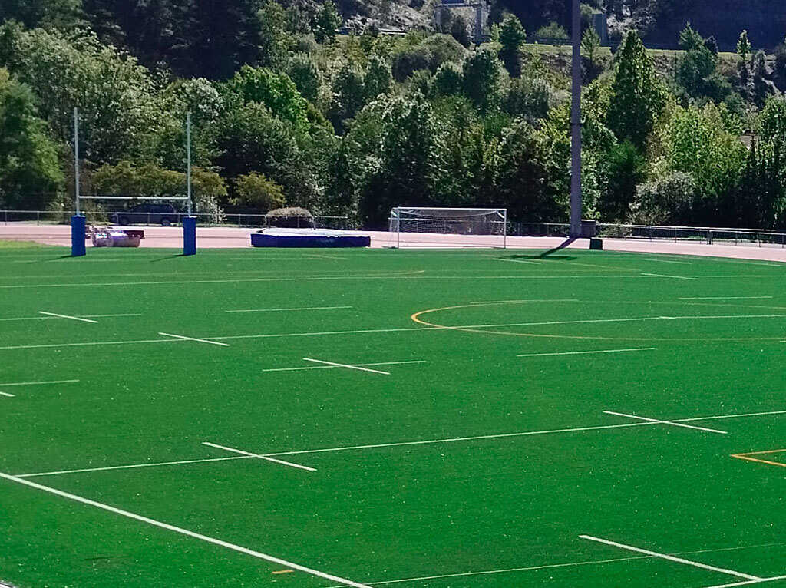
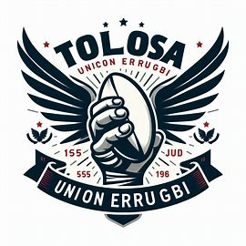

Klubaren Historia
Tolosa Rugby Union 2020an sortu zen. Kluba hasiera batean hainbat entzutezina izan zen, baina gero eta gero, bere jokalari gazteek eta entrenatzaileek lana eginez, liga desberdinak irabazi ditu.
Kluba sortu zen helburu handiarekin: rugbya sustatzea, Tolosako herritarrei kirol hau hurbiltzea eta komunitatea elkartzea. Sortze prozesua ez zen erraza izan, baina herriko langileek, negozioek, eta jendea diru-laguntza eta laguntasunarekin parte hartu zuten.
Sortzean erabili zen diru kopurua materialak, arropa eta instalazioak erosteko, eta lehenengo denboraldian ziren gastu guztiak hasierako helburuak lortu arte kobratu gabe geratu ziren. Kluba azkenaldian handitu da, eta Tolosako herriak laguntza eta harreman guztiak ematen dizkio.
Estadioa eraikitzean, Tolosa Rugby Unionek denbora luzea hartu zuen. Estadioa eraikitzean parte hartu zuten herriko langileek diru-laguntza eta eskaintzak bultzatuta, eta 3 urtez inguru hartu zuen prozesu osoa.
Lehenengo, Tolosa Rugby Unionek logo zaharra hau erabili zuen, baina geroago, klubak bere ikurra modernizatu nahi izan zuen. Logoa aldatu zuten, eguneratzeko eta kluba berrikuntza eta futurora eramateko erabaki zuten.
Herriko biztanleekin batera, Tolosa Rugby Unionek etorkizunera begira dauka. Kluba sustatzen jarraitu eta herria hurbiltzen jarraituz, kirola eta kultura batera elkartuz.
Sub 18 eta Sub 16 kategoriak sortzearen helburua da ikuspegi zabaleko trebakuntza ematea eta hainbat adingabeentzako aukera eskaintzea. Kluba oinarri handiko jokalariak eta entrenatzaileak bultzatzen ditu, eta espero da talde hauek etorkizunean lortu duten arrakastaren parte izango direla.